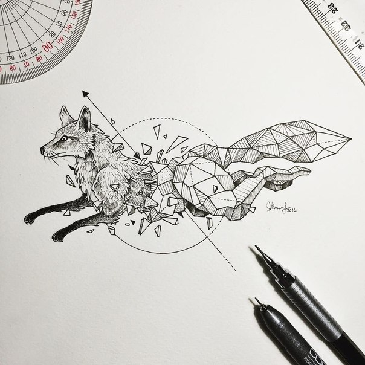
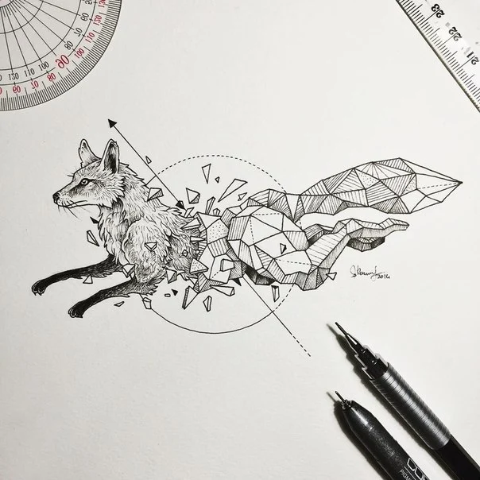

Картинка в формате JPEG, вес - 59.9 Кб

Картинка в формате PNG, вес - 337.5 Кб
Картинка в формате WebP, вес - 37 Кб
WebP — это формат файла, разработанный компанией Google в 2010 году. Его особенностью является продвинутый алгоритм сжатия, позволяющий сократить размер картинки без видимых потерь в качестве.
Да, другие форматы тоже поддерживают сжатие, но технологии, стоящие в основе WebP, куда прогрессивнее. И если сравнивать WebP с конкурентами в соотношении степени сжатия к качеству картинки, то разработка Google одержит уверенную победу.
В среднем вес картинок сокращается на 25–35%, что позволяет вебмастерам размещать на сайтах больше изображений, не тратя впустую драгоценное пространство на жестком диске арендованного VDS.
При разработке формата сотрудники Google использовали те же методики сжатия, что используются в компрессии кодеков VP8.
Для сравнения я выбрал по 3 картинки, изначально имевшие разрешение JPG (конвертировал при помощи сервиса https://convertio.co/ru/jpg-png/)
Картинка в формате JPEG, вес - 59.9 Кб
Картинка в формате PNG, вес - 337.5 Кб
Картинка в формате WebP, вес - 37 Кб
Картинка в формате JPEG, вес - 76 Кб
Картинка в формате PNG, вес - 378.5 Кб
Картинка в формате WebP, вес - 56.3 Кб
Картинка в формате JPEG, вес - 48.4 Кб
Картинка в формате PNG, вес - 321.7 Кб
Картинка в формате WebP, вес - 35.8 Кб
Для каждой задачи выбирайте свой формат изображения. Если важна быстрая загрузка, вы работаете с фотографиями или другими многоцветными изображениями, то лучше всего подойдёт WebP.
Если вам необходимо сохранить качество графики и логотипов, то лучше использовать PNG. Для изображений со множеством цветов и плавными переходами цвета выбирайте формат JPEG.